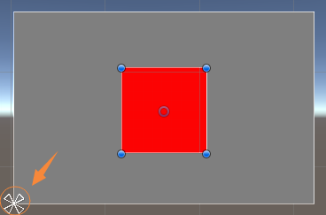
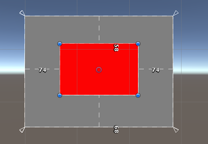
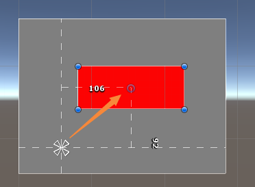
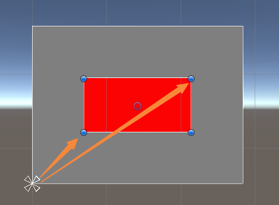
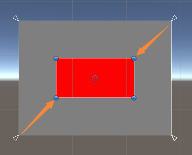

RectTransform学习
撰写于 2019-07-03 修改于 2019-07-03 分类 Unity
RectTransform学习
最近做了很多关于UI的东西，新手入门嘛，基本都是从UI做起的。今天做一个工具的时候，需要在代码中获取一个Image的宽度，遇到了一些问题，一直以为用sizeDelta就可以得到宽度，结果值不对，竟然是负的，仔细一想，不对啊！以前经常用这个变量啊，没出错。网上查了一下，发现自己对RectTransform这个组件还是不了解，总结如下：
cocos2d-x惹的祸
如果你跟我一样，是从2D转到3D的，并且以前用过Cocos2d-x或者Egret等引擎，那你一定会对RectTransform中的某些概念搞混
Anchor是什么
在Cocos2d-x中Anchor被翻译为锚点，这点跟U3D是一样的，但是概念却不一样，Cocos2d-x中的Anchor就是U3D中的Pivot，定义的是UI的轴心，这点很坑！那在U3D中Anchor的意义是什么呢？在U3D中，Anchor是一种布局定义，就是相对父节点，如何来约束子节点的位置和大小。

如上图所示，箭头所指处，即为锚点，锚点是一个百分比的值，是相对于父节点来设置的。在属性面板可通过Anchors来观察和设置Anchor的Min和Max的值，这两个值对应一个矩形框，可称为锚点框，Min对应的就是锚点框左下角的位置，Max对应的就是锚点框右上角的位置。
子节点相对于锚点的框的位置不会发生变化。上图是锚点重合，位于白块的左下角，也就是说红块相对于白块的左下角的距离保持不变，无论白块如何移动或者大小如何改变，红块也会保持该距离来相对移动。拖动红块时，我们可以看到编辑器上面自动标出了4条边到父节点的距离，同时属性面板的参数也变为left，top，right，bottom，与之对应。

上图，Min的位置和Max的位置没有重合，位于左上和右下，图中显示的是4个角，也就是子节点的4个边到父节点的4条边距离保持不变，父节点大小发生变化，子节点也随之发生改变。其实很多UI编辑器，Cocosbuilder，Cocoscreator，FairyGUI等等都有这样的概念，只不过叫法不一样，Unity整合的更好一些。
Pivot是什么
Pivot是轴的意思，假如用一个钉子，把一副画钉在墙上，这个钉子就是Pivot，旋转，缩放，移动就是相对这个点的。不多解释了，很简单！
anchoredPosition
anchoredPosition就是Pivot相对于Anchor的位置。当anchor的Min和Max重合时，属性面板中显示的PosX 和 PosY就是 anchoredPosition

当anchor的Min和Max不重合时，anchoredPosition就比较复杂了，在这种情况下，Unity会根据Pivot、AnchorMin和AnchorMax计算出一个锚点，然后在通过Pivot和锚点来得出anchoredPosition的位置，不在细究。
offsetMin、offsetMax
offsetMin表示物体的左下角相对于AnchorMin的偏移， offsetMax表示物体右上角相对AnchorMax的偏移

上图所示，AnchorMin和AnchorMax重合，offsetMin和offsetMax的x、y都为正值

上图所示，AnchorMin和AnchorMax不重合，offsetMin的x、y都为正值，offsetMax的x、y为负值。
sizeDelta
sizeDelta就是offsetMax - offsetMin的值，很多人以为sizeDelta就是UI的尺寸，其实不然，当AnchorMin和AnchorMax重合时，sizeDelta就是UI的尺寸，但是当AnchorMin和AnchorMax不重合，offsetMax - offsetMin是负值，需要取反，才是UI的尺寸